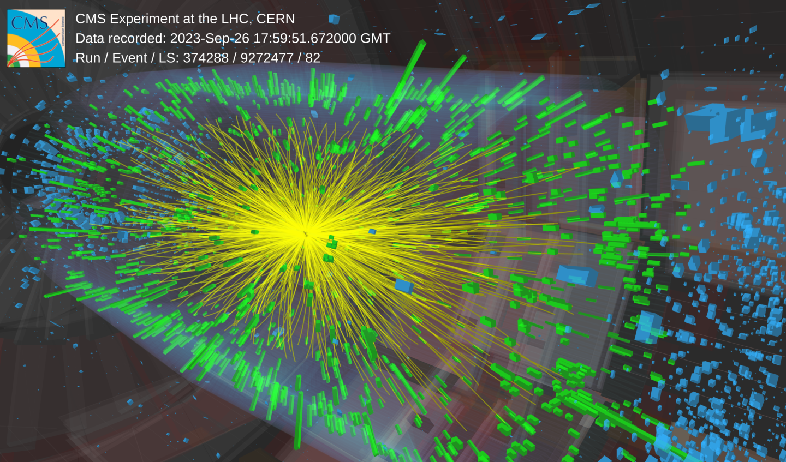

The 2023 LHC Heavy Ion Run!
October 10, 2023

On September 26th, the large hadron collider (LHC) started colliding lead ions together at a world-record 5.36 TeV collision energy. Aside from a short test done in 2022, this is the first time the LHC has delivered heavy ion collisions in over 5 years, and marks the beginning of the LHC Run 3 for heavy ions! My CMS colleagues and myself are excited to gather and analyze this new data, which should allow us to probe the quark-gluon plasma at record temperatures (over 5 trillion Kelvin!) and energy densities. The event display above shows one of the first events we recorded, illustrating the huge number of particles produced in these collisions.
As part of the experimental preparations for this year, I was heavily involved in a project to develop of a new data format for the CMS detector that will be used to store all the data we collect. By using a clever algorithm to compress the information output by our silicon tracking detector, this data format is around 25% smaller than what we used previously, which will allow us to take almost 35% more data this year as compared to the previous data format. When combined with other upgrades of the detector readout, CMS can now record over 25,000 heavy ion collisions, corresponding to over 20 gigabytes of data, every second!
Another exciting development for this year includes the addition of a capability to select events using our zero degree calorimeters, a detector that identifies neutrons produced by the breakup of the colliding ions. This addition will enable an exciting physics program targeted towards looking at 'ultraperipheral' collisions, where the lead ions interact via the electromagnetic force. It also increases the ability of our detector to reject noise.

To make sure everything goes smoothly, many of my colleagues and I have traveled from all over the world to CERN in Geneva, Switzerland, to be on-site so that we can quickly communicate and look at the new data. You can see a photo of the CMS heavy ion crew above when we managed to take a break from looking at all the new data. One of the best parts of the heavy ion run is seeing old friends and meeting new colleagues!